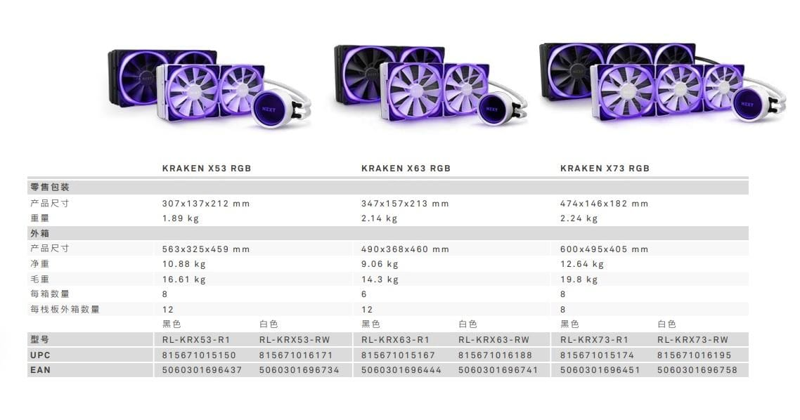

NZXT Kraken X63

280mm 一体式水冷的颜值代表，无限镜 RGB 水冷头配 CAM 软件调控，280 冷排散热规模充足，适合侧透机箱里追求灯效与性能平衡的玩家。
客观评测
Kraken X63 采用 280mm 铝制冷排（约 315×143×30mm），配两把 140mm Aer P 风扇（约 1800RPM），水泵转速 800–2800rpm 可调，铜底接触面导热效率高。官方 TDP 支持约 250W 以上，实测压制 i7/R7 级别处理器满载温度良好，高负载噪音约 36dB。水冷头内置无限镜 RGB 灯效，通过 NZXT CAM 软件可调节灯效与水泵/风扇曲线，6 年质保。
主观点评
X63 是侧透机箱里的门面担当，无限镜水冷头亮起来的瞬间整台机器的档次感就上来了，NZXT 的工业设计确实有一套。散热表现对 280 冷排来说称职，日常游戏温度好看又安静。CAM 软件功能全面但偶尔让人又爱又恨——后台进程与频繁更新略显繁琐。如果你既想要水冷的散热规模、又在意装机颜值，X63 是稳妥的答案。
优点与不足
- 无限镜水冷头灯效惊艳，装机门面担当
- 280mm 冷排散热规模接近 360 水冷
- CAM 软件调速与监控功能完善
- 价格偏高，灯效占了不小成本
- CAM 软件后台占用与更新频繁
参数规格
| 类型 | 280mm 一体式水冷散热器 |
|---|---|
| 冷排 | 约 315×143×30mm 铝制冷排 |
| 风扇 | 2×140mm Aer P 风扇（约 1800RPM） |
| 风量/风压 | 约 98CFM / 2.71mmH2O（单扇） |
| 水泵 | 转速 800–2800rpm，铜底接触面 |
| 噪音 | 约 21–36dB（随转速变化） |
| TDP 支持 | 约 250W+ 级别 |
| 平台 | Intel LGA1700/1200、AMD AM4/AM5 |
| 灯效 | 无限镜 RGB 水冷头（CAM 软件调控） |
| 水管 | 约 400mm 编织水冷管 |
| 软件 | NZXT CAM 监控与调速 |
| 质保 | 6 年质保 |